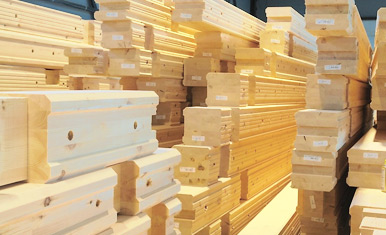
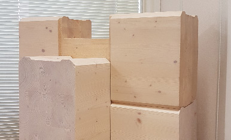
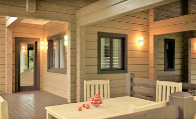

<!doctype html>

<head>
    <title>karelianhouse.ru</title>
    <meta charset="utf-8">
    <meta http-equiv="Content-Type" content="text/html; charset=UTF-8">
    <meta http-equiv="X-UA-Compatible" content="IE=edge,chrome=1">
    <meta name="DC.Creator" content="Карельский дом">
    <meta name="DC.Title" xml:lang="EN" content="Karelian House - eco log wooden houses in Karelia, Russia">
    <meta name="DC.Title" xml:lang="RU"
        content="Карельский дом - Дома и коттеджи из экологически чистого клееного бруса в Карелии">
    <meta name="DC.Language" scheme="dcterms:RFC1766" content="RU">
    <meta name="googlebot" content="index, follow">
    <meta name="robots" content="index, follow">
    <meta name="revisit-after" content="7 days">
    <meta name="city" content="Petrozavodsk">
    <meta name="country" content="Russian Federation">
    <meta name="keywords"
        content="Каркасный дом, каркас, дом из бруса, деревянный дом, клееный брус, из бруса, деревянное строительство, дома, финское качество, коттедж, баня, сблокированный, Карелия, Петрозаводск, карельский домик, банька, экологически чистый, строительство, постройка, жилье, загородный, вилла, качество">
    <meta name="description"
        content="Мы строим, собираем и продаем дома из клееного бруса. Проекты домов отвечают высочайшему стандарту качества и новейшим технологиям строительства в Карелии">
    <meta name="viewport" content="width=device-width, initial-scale=1">
    <link rel="stylesheet" type="text/css" href="css/semantic.min.css">
    <link rel="stylesheet" type="text/css" href="css/styles.css">
</head>

<body>
    <header>
        <div class="back"></div>
        <div class="logo">
            <h1>Карельский дом</h1>
        </div>
        <div class="price">
            <span>дом из клееного бруса</span>
            <div class="middle">
                <span>от</span>
                <span class="amount">16 500</span>
            </div>
            <span>рублей / м<sup>2</sup></span>
        </div>
        <div class="underhead">
            <div class="woodbox">
                <h2>соберем для Вас дом из бруса</h2>
                <div class="ui list">
                    <div class="item">
                        <i class="icon check circle"></i> безупречного качества
                    </div>
                    <div class="item">
                        <i class="icon check circle"></i> с гарантией
                    </div>
                    <div class="item ui marked">
                        <i class="icon check circle"></i> и в короткий срок от 23 дней
                    </div>
                </div>
            </div>
            <div class="videobox">
                <video width="320" controls class="show only on-screen-320px"
                    src="http://best.karelianhouse.ru/media/movie0.webm" type='video/webm; codecs="vp8, vorbis"'>
                    Извините, ваш браузер не поддерживает возможность проигрывания html5 видео.
                </video>
                <video width="400" controls class="show only on-screen-480px"
                    src="http://best.karelianhouse.ru/media/movie0.webm" type='video/webm; codecs="vp8, vorbis"'>
                    Извините, ваш браузер не поддерживает возможность проигрывания html5 видео.
                </video>
                <video width="560" controls class="show only on-screen-960px"
                    src="http://best.karelianhouse.ru/media/movie0.webm" type='video/webm; codecs="vp8, vorbis"'>
                    Извините, ваш браузер не поддерживает возможность проигрывания html5 видео.
                </video>
                <video width="720" controls class="show only on-screen-1280px"
                    src="http://best.karelianhouse.ru/media/movie0.webm" type='video/webm; codecs="vp8, vorbis"'>
                    Извините, ваш браузер не поддерживает возможность проигрывания html5 видео.
                </video>
                <div class="features">
                    <h3>Используем материал 100% качества</h3>
                    <p>Применяем только отборный материал, высушенный по технологии до влажности 8-10%</p>
                    <p>При изготовлении бруса применяется экологически чистые клеи европейского производства</p>
                    <p>Соединительные пазы нарезаются с точностью до 0.25 мм</p>
                    <p>Упаковка и защита древесины осуществляется в производственных условиях</p>
                </div>
            </div>
            <div class="centered v-space quad">
                <button type="button" class="yellow wide">узнайте больше</button>
            </div>
        </div>
    </header>
    <main>
        <section class="dark why-choose">
            <div class="wrapper">
                <h3>почему наши клиенты<br>выбирают дома из дерева</h3>
                <div class="ui stackable two column grid">
                    <div class="column">
                        <p>Сегодня из дерева строят все, что угодно: дома, кафе, спортзалы, театры и галереи – строят
                            красиво и изобретательно. Дерево – один из самых модных материалов современной мировой
                            архитектуры. В России тоже существует мощная традиция – оригинальное деревянное зодчество
                            русского севера. Не случайно, в знаменитом Атласе современной архитектуры (издательство
                            Phaidon) из шести русских объектов – три из дерева.</p>

                        <p>Почему же в современной России так мало строят из дерева жилых домов? Их доля из всех
                            строящихся в течение года составляет 5% (для сравнения, в Америке – 80%).</p>

                        <p>Ответов на этот вопрос несколько: строящиеся деревянные дома – удивительно однообразны –
                            унылое воспроизведение одной и той же избушки.</p>
                    </div>
                    <div class="column">
                        <p>Да, деревянный дом предполагает архитектуру, а у нас на ней привыкли экономить. Кроме того,
                            дерево ассоциируется у многих с ушедшим временем, с патриархаль-ностью, с деревенским
                            укладом. В деревянном доме можно счастливо и комфортно жить, но как эквивалент богатства он,
                            конечно, уступает каменному.</p>

                        <p>Правда, время вносит свои коррективы, а мировой кризис убыстряет этот процесс: экологичность,
                            сдержанность, простота – факторы, которые начинают определять состоятельность человека.
                            Поэтому строительство деревянных жилых домов – самая устойчивая тенденция ближайших лет.
                            Причем все большее число людей предпочитает строить деревянные дома для круглогодичного
                            использования.</p>
                    </div>
                </div>
            </div>
        </section>
        <section class="green benefits">
            <div class="wrapper">
                <h3>Оцените преимущества<br>дома из клееного бруса</h3>
                <ol>
                    <li>Экологически-чистый материал</li>
                    <li>Долговечность и прочность конструкции</li>
                    <li>Усадка при сборке менее 1%</li>
                    <li>Высокий уровень энерго-эффективности</li>
                    <li>Скорость строительства без потерь в качестве</li>
                </ol>
            </div>
        </section>
        <section class="technology">
            <div class="wrapper">
                <div class="ui stackable two column grid">
                    <div class="column text">
                        <p>Преимущества определяются самой технологией производства клееного бруса. Она заключается в
                            следующем: заранее подготовленные (распиленные и высушенные до влажности 10-12%,
                            проструганные) доски из хвойных пород древесины склеиваются под мощным прессом. </p>
                        <p>В итоге клееный брус оказывается прочнее обычного, не деформируется, не коробится.</p>
                    </div>
                    <div class="column pic">
                        
                    </div>
                </div>

                <div class="ui computer reversed stackable two column grid">
                    <div class="column text">
                        <p>Клееный брус может быть различного сечения. Для строительства домов для круглогодичного
                            проживания используется брус не мене 200 мм, его применение гарантирует эффективное
                            сохранение тепла в доме: брус изготавливается на заводе под конкретный проект, упаковывается
                            и доставляется прямо на участок, где и собирается по принципу детского конструктора. </p>
                    </div>
                    <div class="column pic">
                        
                    </div>
                </div>

                <div class="ui stackable two column grid">
                    <div class="column text">
                        <p>Клееный брус – довольно легкий материал и не требует массивного дорогого фундамента.</p>

                        <p>Построенный из клееного бруса дом не нуждается в дополнительной отделке – внутренней и внешней, но не исключает использование самых разных отделочных материалов, предложенных архитектором и дизайнером интерьера.</p>
                    </div>
                    <div class="column pic">
                        
                    </div>
                </div>

                <div class="ui computer reversed stackable two column grid">
                    <div class="column text">
                        <p>В отличие от обычного профилированного бруса, клееный брус может быть разной длины.</p>

                        <p>Это дает архитектору возможность реализовать в деревянном доме конструктивные решения с использованием большепролетных элементов.</p>
                    </div>
                    <div class="column pic">
                        
                    </div>
                </div>

                 <div class="ui stackable two column grid">
                     <div class="column text">
                         <p>Свойства клееного бруса определяют и существенную экономию средств и на последующих этапах строительства дома: так, сборка дома существенно сокращается за счет меньшего количества монтажных элементов, не требуется их подгонка – в итоге экономится время сборки и оплата труда строителей. Причем сборка может осуществляться и в зимнее время. После стройки практически не остается строительного мусора на участке. </p>
                     </div>
                     <div class="column pic">
                         
                     </div>
                 </div>

                 <div class="ui computer reversed stackable two column grid">
                     <div class="column text">
                         <p>Поскольку усадка в процессе сборки стен дома составляет менее 1%, окна и двери можно устанавливать сразу же после окончания монтажа.</p>

                        <p>А в эксплуатации можно получить экономию на отоплении – клееный брус превосходно держит тепло. </p>
                     </div>
                     <div class="column pic">
                         
                     </div>
                 </div>
                 <p class="conclusion">Дома из клееного бруса – оптимальное решение для современных и умных людей, ценящих уют и комфорт. Словом, клееный брус – именно тот материал, который позволяет архитектору воплотить в реальность представления человека о доме мечты.</p>
            </div>
        </section>
        <section class="dark tendency">
            <div class="wrapper">
                <h3>ТЕХНОЛОГИИ СТРОИТЕЛЬСТВА ДОМА</h3>
                <div class="ui computer reversed stackable two column grid">                    
                    <div class="desc column">
                        <p>Сегодня известны несколько технологий строительства домов для проживания круглый год: </p>
                        <ul class="ui list">
                            <li>каркасное и каркасно-панельное домостроение,</li>
                            <li>строительство из строганного и клееного бруса,</li>
                            <li>из обычного и оцилиндрованного бревна.</li>
                        </ul>
                        <p>Помимо тех факторов, которые уже названы, строительство деревянного дома предпочтительнее по соотношению цена-качество. Стоит учесть и такую особенность России, как качество ее дорог: технологии строительства, требующие применение тяжелой техники и беспрепятственного подъезда к участку, не всегда реализуемы.</p>
                        <p>Поэтому наиболее современной технологией строительства загородного жилого дома, отвечающей изменившимся предпочтениям и позволяющей избежать многих проблем, служит возведение дома из клееного бруса.</p>
                    </div>
                    <div class="pic column">
                        
                    </div>
                </div>
            </div>
        </section>
        <section class="green guarantee">
            <div class="wrapper">
                <h3>почему наши клиенты выбирают «КАРЕЛЬСКИЙ ДОМ»</h3>
                <div class="ui stackable three column grid">
                    <div class="column">
                        <div class="count">1</div>
                        <p>Компания «Карельский Дом» существует на рынке малоэтажного строительства с 2002 года - мы
                            успешно и безукоризненно работаем уже более 18 лет.</p>
                    </div>  
                    <div class="column">
                        <div class="count">2</div>
                        <p>Мы гарантируем сроки поставки и качество поставляемого товара. Мы готовы участвовать в
                            осуществлении Вашего замысла строительства дома из бруса и предлагаем нашу продукцию, а так
                            же умение и многолетний опыт.</p>
                    </div>
                    <div class="column">
                        <div class="count">3</div>
                        <p>Мы гарантируем, что все материалы, включенные, в состав поставки домокомплекта, соответствует
                            положениям и требованиям ГОСТ 11047-90.</p>
                    </div>
                </div>
            </div>
        </section>
        <section class="four-column plan"></section>
        <section class="contacts consult"></section>
        <section class="three-column spec"></section>
        <section class="three-column assembly"></section>
        <section class="one-column assembly-price"></section>
        <section class="contacts assembly-price-reguest"></section>
        <section class="balloons faq"></section>
        <section class="contacts question"></section>
    </main>
    <footer>
        <div class="wrapper">
            <div class="ui stackable three column grid">
                <div class="row">
                    <div class="column">
                        <div class="logo">
                            <p>Карельский дом</p>
                        </div>
                    </div>
                    <div class="column">
                        <div class="address">
                            <p>185013, Карелия</p>
                            <p>г. Петрозаводск,<br>
                                ул. Пограничная, 22</p>
                        </div>
                    </div>
                    <div class="column">
                        <div class="contacts">
                            <div class="phone">
                                <a href="tel:+79535332396">+7 953 533 23 96</a>
                            </div>
                            <div class="link">
                                <a href="mailto:info@karelianhouse.ru">
                                    <i class="icon envelope"></i>
                                    info@karelianhouse.ru</a>
                            </div>
                            <div class="link">
                                <a href="https://instagram.com/karelskii_dom">
                                    <i class="icon instagram"></i>
                                    karelskii_dom</a>
                            </div>
                        </div>
                    </div>
                </div>
                <div class="row smallest">
                    <div class="column centered">Информация не является публичной офертой</div>
                    <div class="column">2019 &copy; Все права защищены</div>
                    <div class="column"><a href="#">Политика конфиденциальности</a> | <a href="#">Лицензии</a></div>,
                </div>
            </div>
        </div>        
    </footer>
    <script src="https://code.jquery.com/jquery-3.1.1.min.js"
        integrity="sha256-hVVnYaiADRTO2PzUGmuLJr8BLUSjGIZsDYGmIJLv2b8=" crossorigin="anonymous"></script>
    <script src="js/semantic.min.js"></script>
</body>

</html>